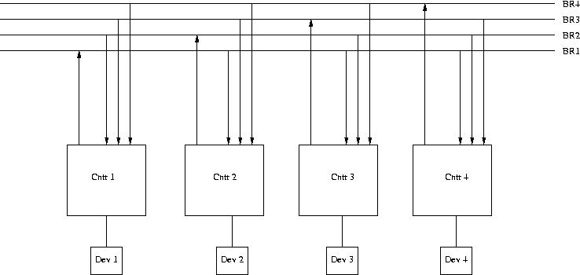
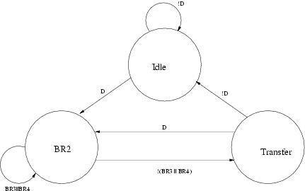
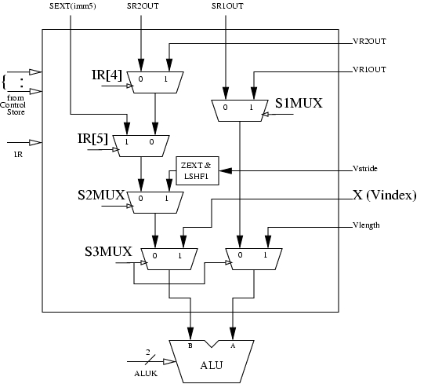

An 8KB cache size with a 8B line size, in a 4-way set associative cache means there are 8KB ÷ (4 × 8B) = 256 sets in the cache.
Since there are 256 or 28 sets, 8 bits are required to index into the correct set. Since there are 8B or 23 bytes in a cache line, 3 bits are required to find the correct byte within a block. Given a 24-bit address space, this leaves 24 - 8 - 3 = 13 bits left over for the tag store. Additionally, the tag store must hold 2 bits for the V/NV replacement policy and 1 valid bit. This means each cache line must have a 16-bit tag store associated with it. 2B of tag store times (256 × 4) cache lines in the cache means that the tag store, in total takes up 2048 bytes, which is 16384 bits
The size of the tag store is 212 + 28. We know that the size of the tag store can be given as the product of number of sets and number of bits per set.
We also know that address space is 16-bits. Hence, tag + index + bib = 16
In order to find bib, we need to find index and tag. The following bits are necessary for each set of the tag store:
- 1 bit for LRU (remember: you only need one bit per set for a 2-way associative cache)
- 2 valid bits
- 2 dirty bits
- 2 × tag tag bits
Total number of bits per set is 5 + 2 × tag. An important conclusion that can be drawn is that number of bits per set will always be an odd number.
We will also use the fact that number of sets is always a power of 2 (since it is indexed using an integer number of bits). Given the size of the tag store, index has to be a number less than 8 (the size of the tag store is indivisible by 29 or greater).
The only value of index that fits both criterion is 8. Therefore:
Hence, the cache block size is 4 bytes
We can use the following equations in both part a and part b to compute the instruction and data access time.
-
We need to calculate the memory latency. Since each cache block is 8 words, it will take 8 accesses to get a cache block from memory.
(-)(...)(-) (-)(...)(-) (-)(...)(-) (-)(...)(-) (-)(...)(-) (-)(...)(-) (-)(...)(-) (-)(...)(-) |<---------------------- 169 cycles ----------------------------->|Using the equations, we get 2.5675 cycles for instruction_access_time and 5.825 for data_access_time.
The average latency is 2.5675 + 0.3 × 5.825 = 4.315 cycles
-
We again need to compute the memory latency:
(-)(.............)(-) (-)(.............)(-) (-)(.............)(-) (-)(.............)(-) (-)(...........)(-) (-)(...........)(-) (-)(...........)(-) (-)(...........)(-) |<--------21-----><1><-----20----><---- 4 --->|So the mem_latency is 46 cycles. Again using the equations, the instruction_access_time is 1.645 and data_acces_time is 2.75.
The average latency is 1.645 + 2.75 × 0.3 = 2.47 cycles
-
We need to compute memory latency for 8-way interleaving
(-)(.............)(-) (-)(.............)(-) (-)(.............)(-) (-)(.............)(-) (-)(...........)(-) (-)(...........)(-) (-)(...........)(-) (-)(...........)(-) |--------21-------|--------8-----------|So memory latency is 29 cycles. Using the equations, we get the instruction_access_time as 1.517 and data_acces_time as 2.325.
The average latency is 1.517 + .3 * 2.325 = 2.215
-
The improvement is (4.315 - 2.47) ÷ 4.315 = 0.4276 Therefore, the average latency improves by 42.76%
- The address is divided into 3 portions:
- address[1:0] (2 bits) for the byte in the block
- address [4:2] (3 bits) for the cache index
- address[11:5] (7 bits) for the tag
The contents of the cache at the end of each pass are the same. They are shown below:
Valid Tag Data (addresses are written inside each byte) 1 0010 000 203 202 201 200 1 0010 000 207 206 205 204 1 0010 000 20B 20A 209 208 1 0010 010 24F 24E 24D 24C 1 0010 111 2F3 2F2 2F1 2F0 1 0010 111 2F7 2F6 2F5 2F4 1 0010 000 21B 21A 219 218 1 0010 000 21F 21E 21D 21C The hit/miss information for each pass is shown below:
Reference 200 204 208 20C 2F4 2F0 200 204 218 21C 24C 2F4 Pass 1: M M M M M M H H M M M H Pass 2: H H H M H H H H H H M H Pass 3: H H H M H H H H H H M H Pass 4: H H H M H H H H H H M H Hit rate is 33/48
-
The address is divided into two: 2 bits for identifying the byte in the block, 10 bits for the tag. No bits are needed for cache index. The following table shows the contents of the cache at the end of each pass (Valid bits and Tags are ignored, they should be obvious. Starting addresses of blocks in the cache are provided):
Pass Way 0 Data Way 1 Data Way 2 Data Way 3 Data Way 4 Data Way 5 Data Way 6 Data Way 7 Data 1 200 204 24C 20C 2F4 2F0 218 21C 2 200 204 21C 24C 2F4 20C 2F0 218 3 200 204 218 21C 2F4 24C 20C 2F0 4 200 204 2F0 218 2F4 21C 24C 20C The hit/miss information for each pass is shown below:
Reference: 200 204 208 20C 2F4 2F0 200 204 218 21C 24C 2F4 Pass 1: M M M M M M H H M M M H Pass 2: H H M M H M H H M M M H Pass 3: H H M M H M H H M M M H Pass 4: H H M M H M H H M M M H Hit rate is 21/48
-
The address is divided into 3 portions: 2 bits for identifying the byte in the block, 1 bit for the cache index, 9 bits for the tag. The contents of the cache at the end of Pass 1:
Way 0 Way 1 Way 2 Way 3 V Tag Data V Tag Data V Tag Data V Tag Data 1 0010 0000 0 203-200 1 0010 0000 1 20B-208 1 0010 1111 0 2F3-2F0 1 0010 0001 1 21B-218 1 0010 0000 0 207-204 1 0010 0100 1 24F-24C 1 0010 1111 0 2F7-2F4 1 0010 0001 1 21F-21C The hit/miss information for each pass is shown below:
Reference: 200 204 208 20C 2F4 2F0 200 204 218 21C 24C 2F4 Pass 1: M M M M M M H H M M M H Pass 2: H H H M H H H H H M M H Pass 3: H H H M H H H H H M M H Pass 4: H H H M H H H H H M M H Contents of the second set of the cache (index equals 1) after pass 2, 3, and 4 (the first set remains the same):
Pass Way 0 Way 1 Way 2 Way 3 V Tag Data V Tag Data V Tag Data V Tag Data 2 1 0010 0000 0 207-204 1 0010 0001 1 21F-21C 1 0010 1111 0 2F7-2F4 1 0010 0100 1 24F-24C 3 1 0010 0000 0 207-204 1 0010 0100 1 24F-24C 1 0010 1111 0 2F7-2F4 1 0010 0001 1 21F-21C 4 1 0010 0000 0 207-204 1 0010 0001 1 21F-21C 1 0010 1111 0 2F7-2F4 1 0010 0100 1 24F-24C Hit Rate is 30/48
In a split transaction bus, the bus is used only when information
needs to be transferred on the bus. The communicating devices release
the bus if there is no need to transfer data on the bus. Hence,
multiple concurrent bus transactions can take place simultaneously,
which likely improves system performance.
The state diagram for the FSM device controller is shown below. Note that in this figure, the transition from BGout to IDLE is based on the SACK signal. This is to illustrate the first race condition which is corrected by basing the transition on (NOT BGin).
The input and output signals of the controller are:
| Signal | Type | Function |
| DEV | Input | Asserted when the device needs to initiate a bus transaction |
| BGin | Input | Incoming bus grant signal, asserted by the priority arbitration unit |
| BBSYin | Input | Asserted by the current bus master. Negative edge indicates the end of a bus cycle. |
| MSYN | Input | Master-side handshaking signal that controls the bus transaction between the bus master and the slave |
| SSYN | Input | Slave-side handshaking signal that controls the bus transaction between the bus master and the slave |
| BRout | Output | Asserted to request the bus. Goes to the priority arbitration unit. |
| SACK | Output | Asserted by the device that has won the arbitration |
| BBSYout | Output | Same as BBSYin |
| BGout | Output | Asserted when the controller needs to pass the bus grant signal down the daisy chain. |
Two race conditions are:
- Let's say device controller D1 is in BGout
state. This means that some device D2 that is down the same daisy
chain as D1 had requested and is granted the bus. Let's say the device
of D1 asserts the DEV signal while D1 is in BGout state. D3
will eventually receive the BGin signal and transition to
the SACK state. It will take some time for the SACK signal to travel
to the priority arbitration unit. The SACK signal probably reaches D1
before it reaches the priority arbitration unit. Hence, when the SACK
signal reaches D1 the BGin input of D1 is still being
asserted. Therefore, upon receiving the SACK signal D1 will
immediately transition to IDLE to BRout to SACK
states. Hence, both D1 and D3 will be asserting the SACK signal which
is not desirable. A simple solution that fixes this race condition is
not transitioning to IDLE state if the BGin signal is still
high.
- This race condition is a little bit more subtle. From the PAU side. the PAU asserts BGj which works its way down the daisy chain to all devices at BRj. Before SACK is asserted, a controller asserts BRk, where k is higher priority than j. PAU now asserts BGk, and you have two BG signals propagating, which will result in two controllers thinking they are the next bus master. Solution: PAU latches BR signals when it sees NOT-SACK, indicating it is okay to grant the bus again. NOT-SACK is also gated (after sufficient delay) with the BG signals, guaranteeing that a BG signal cannot be asserted until after PAU logic has taken effect. Any subsequent BR signal does not get latched and so can not affect the PAU logic.
-
The solution is shown below:
 -
It is possible. Consider a case where device 3 and 4 just alternate the bus.
-
The solution is shown below.

Block Size
The following table lists hit ratios for different cache block sizes given the access sequence 1 (0, 2, 4, 8, 16, 32):
| Block Size | Hit Ratio |
|---|---|
| 1B | 0/6 |
| 2B | 0/6 |
| 4B | 1/6 |
| 8B | 2/6 |
| 16B | 3/6 |
| 32B | 4/6 |
Since the hit ratio is reported as 0.33 for this sequence, the block size must be 8 bytes. Therefore, the accesses look like this:
| Address | 0 | 2 | 4 | 8 | 16 | 32 |
|---|---|---|---|---|---|---|
| Hit/Miss | M | H | H | M | M | M |
Associativity
Notice that all of the addresses of sequence 2 (0, 512, 1024, 1536, 2048, 1536, 1024, 512, 0) are multiples of 512. This means that they all map to the same set, since the size of the cache can only be 256 or 512 bytes. Therefore, the hit ratio would be 0/9 in case of a direct-mapped cache. In case of a 2-way cache, the accesses would behave as follows:
| Address | 0 | 512 | 1024 | 1536 | 2048 | 1536 | 1024 | 512 | 0 |
|---|---|---|---|---|---|---|---|---|---|
| Hit/Miss | M | M | M | M | M | H | M | M | M |
The resulting hit rate would be 1/9. Similarly, for 4-way cache:
| Address | 0 | 512 | 1024 | 1536 | 2048 | 1536 | 1024 | 512 | 0 |
|---|---|---|---|---|---|---|---|---|---|
| Hit/Miss | M | M | M | M | M | H | H | H | M |
The resulting hit rate would be 3/9, and thus the cache is 4-way set associative.
Cache Size
If the cache size were 256B, there would be 3 index bits and all of the adresses in sequence 3 (0, 64, 128, 256, 512, 256, 128, 64, 0) would map to the same set:
| Address | 0 | 64 | 128 | 256 | 512 | 256 | 128 | 64 | 0 |
|---|---|---|---|---|---|---|---|---|---|
| Hit/Miss | M | M | M | M | M | H | H | H | M |
The resulting hit ratio would be 3/9, and thus the cache size is 256B. For completeness, here's how the accesses would look like in case of a 512B cache (4 index bits):
| Address | 0 | 64 | 128 | 256 | 512 | 256 | 128 | 64 | 0 |
|---|---|---|---|---|---|---|---|---|---|
| Hit/Miss | M | M | M | M | M | H | H | H | H |
Replacement Policy
In case of the FIFO replacement policy, the accesses of sequence 3 (0, 512, 1024, 0, 1536, 0, 2048, 512) would look as follows:
| Address | 0 | 512 | 1024 | 0 | 1536 | 0 | 2048 | 512 |
|---|---|---|---|---|---|---|---|---|
| Hit/Miss | M | M | M | H | M | H | M | H |
The resulting hit ration would be 3/8. However, in case of the LRU replacement policy the hit rate would be 0.25:
| 0 | 512 | 1024 | 0 | 1536 | 0 | 2048 | 512 |
| M | M | M | H | M | H | M | M |
Thus the replacement policy is LRU.
The following table summarizes the differences between exceptions and interrupts.
| Exceptions | Interrupts | |
|---|---|---|
| Cause | Internal to the running process | External to the running process |
| When are they handled? | When detected (mostly) | When convenient (mostly) |
| Are they maskable? | Almost never | Almost always |
| Priority | Same as the process that caused the exception. | Depends (on the priority of the interrupting device) |
| Context | Process | Handling is done withing the system context. |
- -3.25
- 1.25 x 2^(-128)
- Negative Infinity
Assume the destination register is indicated first, followed by the source(s).
(As stated in the question, cycle counts assume a 16-way interleaved memory so that a new access can be started each cycle. Also, the adder and multiplier are pipelined.)
-
Scalar processor (one of the possible solutions)
MOVI R0, 0 (1 cycle) LEA R4, A (1 cycle) LEA R5, B (1 cycle) LEA R6, C (1 cycle) LEA R7, D (1 cycle) LOOP LD R1, R5, R0 (11 cycles) LD R2, R6, R0 (11 cycles) LD R3, R7, R0 (11 cycles) MUL R1, R1, R2 (6 cycles) ADD R1, R1, R3 (4 cycles) RSHFA R1, R1, 1 (1 cycle) ST R1, R4, R0 (11 cycles) ADD R0, R0, 1 (4 cycles) ADD R1, R0, -100 (4 cycles) BNZ LOOP (1 cycle)5 × 1 + 100 × (11 + 11 + 11 + 6 + 4 + 1 + 11 + 4 + 4 + 1) = 6405 cycles Vector Processor:
The loop could be split into two parts as 64 and 36. Assume the vector code looks as follows: (This solution assumes that the addressing mode VLD V0, B+64 exists - if it doesn't, then you would need 4 + 3 cycles using a pipelined adder to add 64 to A,B,C,D)
LD Vln, #64 (1 cycle) LD Vst, #1 (1 cycle) VLD V0, B (11 + 63 cycles) VLD V1, C (11 + 63 cycles) Vmul V2, V0, V1 (6 + 63 cycles) VLD V3, D (11 + 63 cycles) Vadd V4, V2, V3 (4 + 63 cycles) Vrshfa V5, V4, 1 (1 + 63 cycles) VST V5, A (11 + 63 cycles) LD Vln, #36 (1 cycle) VLD V0, B+64 (11 + 35 cycles) VLD V1, C+64 (11 + 35 cycles) Vmul V2, V0, V1 (6 + 35 cycles) VLD V3, D+64 (11 + 35 cycles) Vadd V4, V2, V3 (4 + 35 cycles) Vrshfa V5, V4, 1 (1 + 35 cycles) VST V5, A+64 (11 + 35 cycles)-
Vector processor without chaining (vector instructions done serially)
First part:
|-1-|-1-|--11--|---63---|--11--|---63---|-6-|---63---|--11--|---63---|-4-|---63---|-1-|---63---|--11--|---63---|
Second part:
|-1-|--11--|--35--|--11--|--35--|-6-|--35--|--11--|--35--|-4-|--35--|-1-|--35--|--11--|--35--|
2 + (74 × 4 + 69 + 67 + 64) + 1 + (46 × 4 + 41 + 39 + 36) = 799 cycles -
Vector processor with chaining, 1 port to memory.
Chaining means the machine begins the next operation as soon as the operands are ready.
First part:
|-1-|-1-|--11--|---63---|--11--|---63---|--11--|---63---|--11--|---63---| |-6-|---63---| |-4-|---63---| |-1-|---63---|Second part:
|-1-|--11--|--35--|--11--|--35--|--11--|--35--|--11--|--35--| |-6-|--35--| |-4-|--35--| |-1-|--35--|Chaining, in this instance, hides the VMULT, VADD, and VSHL operations. Memory becomes the primary bottleneck.
483 cycles -
Vector processor with chaining; 2 loads, 1 store per cycle.
First part:
|-1-|-1-|--11--|---63---| |--11--|---63---| |-6-|---63---| |--11--|---63---| |-4-|---63---| |-1-|---63---| |--11--|---63---|#cycles = 1 + 1 + 11 + 63 + 11 + 4 + 1 + 11 + 63 = 166Second part:
|-1-|--11--|--35--| |--11--|--35--| |-6-|--35--| |--11--|--35--| |-4-|--35--| |-1-|--35--| |--11--|--35--|#cycles = 1 + 11 + 35 + 11 + 4 + 1 + 11 + 35 = 109Total cycles = 166 + 109 = 275 cycles
Another solution is to split the loop into two equal parts as 50 and 50.
LD Vln, #50 (1 cycle) LD Vst, #1 (1 cycle) VLD V0, B (11 + 49 cycles) VLD V1, C (11 + 49 cycles) Vmul V2, V0, V1 (6 + 49 cycles) VLD V3, D (11 + 49 cycles) Vadd V4, V2, V3 (4 + 49 cycles) Vrshfa V5, V4, 1 (1 + 49 cycles) VST V5, A (11 + 49 cycles) VLD V0, B+50 (11 + 49 cycles) VLD V1, C+50 (11 + 49 cycles) Vmul V2, V0, V1 (6 + 49 cycles) VLD V3, D+50 (11 + 49 cycles) Vadd V4, V2, V3 (4 + 49 cycles) Vrshfa V5, V4, 1 (1 + 49 cycles) VST V5, A+50 (11 + 49 cycles)-
Vector processor without chaining (vector instructions done serially)
First part:
|-1-|-1-|--11--|---63---|--11--|---63---|-6-|---63---|--11--|---63---|-4-|---63---|-1-|---63---|--11--|---63---|
Second part:
|--11--|--35--|--11--|--35--|-6-|--35--|--11--|--35--|-4-|--35--|-1-|--35--|--11--|--35--|
2 + (74 × 4 + 69 + 67 + 64) + (46 × 4 + 41 + 39 + 36) = 798 cycles -
Vector processor with chaining, 1 port to memory. Again, this would save only 1 cycle over solution A, since the first load for the second part must wait till the store of the first part finishes. Total = 482 cycles
-
Vector processor with chaining; 2 loads, 1 store per cycle
|-1-|-1-|-11-|-----49-----| |-11-|-----49-----| |-6-|-----49-----| |-11-|-----49-----| ** LD D would need to wait for LD B to finish |-4-|-----49-----| |-1-|-----49-----| |-11-|-----49-----| |-11-|-----49-----| |-11-|-----49-----| ** LD C+50 would need to wait till the LD D from the first part finishes |-6-|-----49-----| |-11-|-----49-----| ** LD D+50 would need to wait for LD B+50 to finish |-4-|-----49-----| |-1-|-----49-----| |-11-|-----49-----|1 + 1 + (11 + 49) + 11 + 4 + 1 + 1 + (11 + 49) + 11 + 4 + 1 + (11 + 49) = 215 cycles
-
-
X is the Vector Index Register, which holds the pointer to the element that is being processed by the vector instruction.
-
The two control signals are RESET.VINDEX and INCREMENT.VINDEX
-
 -
The following solution assumes a change to the microsequencer to branch according to the Z condition code.

101001 ;-mcand = -23
011110 ;mplier = 30
001010 110010 ; product=690
---------
000000 000000 ;start
000000 000000 ;shf 1 (mplier = 10, cin = 0)
010111 000000 ;add
001011 100000 ;shf 1 (cout = 0)
101001 ; -23
110100 100000 ;sub (mplier = 11, cin = 0)
111101 001000 ; shf 2 (cout = 1)
010111 ; +23
111110 100100 ; shf 1 (mplier = 01, cin = 1)
010101 100100 ; add
001010 110010 ; shf 1 (cout = 0, product=690)
Representation of 25 is 039.
17 % p1 = 2 i.e.
15 % p1 = 0 i.e.
p1 is a divisor of 15.
25 % p1 = 0 i.e.
p1 is a divisor of 15.
The greatest common divisor of 5 and 25 is 5.
Therefore, p1 = 5.
17 % p2 = 6 i.e.
11 % p2 = 0 i.e.
p2 is a divisor of 11.
25 % p2 = 3 i.e.
22 % p2 = 0.
p2 is a divisor of 22.
The greatest common divisor of 11 and 22 is 11.
Therefore, p2 = 11.
17 % p3 = 1 i.e.
16 % p3 = 0 i.e.
p1 is a divisor of 16
25 % p3 = 9 i.e.
16 % p3 = 0.
p3 is a divisor of 16.
Therefore, p3 = 16.